Mandolins, mandolas, mandocellos and basses, playing Bach and Mozart in the halls of the Pioneer Valley.
The full orchestra in concert
Our story
An old American tradition, kept going from 2014 to 2020.
Early 1900s
Gibson sent teacher-agents to towns across America to teach, sell and organize mandolin orchestras. They recruited violinists, since the mandolin is tuned like a violin.
The craze faded in the 1920s as the ukulele took over.
1990s
Roots. Adam led earlier mandolin orchestras, the Western Mass Mandolin Orchestra and a group in Keene, New Hampshire, while teaching there.
Feb 2014
The South Hadley Mandolin Orchestra holds its first rehearsal at Sweet Music Studio, formed at the urging of Adam's students. Nine members: seven mandolins, a mandola and a mandocello.
The Classical Mandolin Society of America said it was likely the only mandolin orchestra in the Pioneer Valley. No audition, no fee to join.
Mid-2010s
We organized as the nonprofit Mandolin New England.
Jan 17, 2015
7 p.m. at South Hadley Town Hall. The 11-piece orchestra, rehearsing since June, was joined by Rhode Island's L'Esperance Mandolin Ensemble and Northampton's Mando Paradiso.
Bach's Brandenburg Concerto No. 3, chamber works by modern composers, and "Jugoslavia" performed by L'Esperance.
Aug 2015
Our first public performance of the first movement of Mozart's Eine kleine Nachtmusik, at the Porter-Phelps-Huntington house in Hadley.
Oct 4, 2015
First Sunday Concert at the Renaissance Center, UMass Amherst, billed as the Springfield Mandolin Orchestra. Players aged 30 to 93, student and professional, from western Massachusetts and Rhode Island, rehearsing Mondays at Sweet Music Studio in Granby.
A talk on mandolins in western Mass by Will Melton, the mandola chair and former UMass Director of Strategic Partnerships, then instrument demonstrations
An Anthony Holborne suite: "Teares of the Muses", "Heigh Ho Holiday", "The Night Watch", "Lullabie"
Vivaldi's "La Folia"
Bach's Brandenburg Concerto No. 3
Afterward the audience came up to try the instruments.
Mar 4, 2017
7 p.m. in the sanctuary of the First Congregational Church, South Hadley, which also gave us rehearsal and class space. Joined by Mando Paradiso and members of L'Esperance.
Mozart's Eine kleine Nachtmusik, complete
Irish melodies for orchestra: Percy Grainger's "Molly on the Shore", "Rocky Road to Dublin" arranged by Jim Dalton, and Van Morrison's "Moon Dance"
The first complete performance of "Strinnenia" by Michael Mayerfield Bell, with its new third movement imitating bird calls
The premiere of "Rags, Riffs and Reveries" by Victor Kioulaphides, commissioned by Barbara and Joe Blumenthal for the 100th birthday of Barbara's 1916 Gibson A-Junior
Two pieces by Jim Armenti, played by Mando Paradiso
Tickets $12 advance$15 at the door
2020
COVID stopped our rehearsals, and the orchestra never came back.
At times we were also billed as the Mandolin Orchestra of South Hadley and the Springfield Mandolin Orchestra.
"The efforts of mandolin enthusiasts like Adam Sweet have kept the tradition and musical heritage alive."
"Double the strings: Mandolin orchestra forms in South Hadley"
Gena Mangiaratti, Daily Hampshire Gazette, March 24, 2014.
"The big thrill of playing in an orchestra is being in the middle of the sound. Being in the middle of acoustic instruments, playing harmonies in split-second time — it's a spiritual experience."
Will Melton, mandola
"I want it to be a fun community thing that has a life of its own."
Adam Sweet
"All you really need is a mandolin, an ability to read music, and an interest in playing classical music in a group."
Benjamin Levy, member
In the press
"Mandolin Orchestra of South Hadley to perform Saturday"
Ken Maiuri's Clubland column, Daily Hampshire Gazette, January 14, 2015.
A group of mandolins sounds like a "harpsichord from heaven."
Adam Sweet
"I can teach you how to read music in 20 minutes, how to hold the instrument and play two chords in another 20 and you can be jamming with your friends by the end of the day. How is that not inspiring?"
Adam Sweet
"There's nothing more daring than playing a mandolin solo in concert. And we want to make that simple and accessible, because it's great fun, too."
Adam Sweet
"Depending on the attack, the sounds can take you to the hollows of western Virginia, a café outside Naples, or the highlands of Scotland."
Will Melton, mandola
"The mandolin is truly an instrument for life."
One player coming to that concert was in her 90s; she bought her first and only mandolin in 1948.
Will Melton, mandola
Will played jug band music in the '60s, returned to the mandolin in 2002 after hearing the Providence Mandolin Orchestra, studied with Josh Bell, and joined Adam's orchestra after moving to the Valley for a job at UMass Amherst.
What we played
The classics, arranged for mandolins, and music of our own.
J.S. Bach
Brandenburg Concerto No. 3, arranged for mandolin orchestra
Brandenburg Concerto No. 6, arranged for mandolins
W.A. Mozart
The "Hunt" Quartet, arranged for orchestra
Eine kleine Nachtmusik, arranged for orchestra; played complete on March 4, 2017
Antonio Vivaldi
"La Folia"
In one piece two mandolas covered the viola parts: Keith Higginson on first, and Adam on second, playing a 1916 Gibson mandola.
Anthony Holborne
A suite: "Teares of the Muses", "Heigh Ho Holiday", "The Night Watch", "Lullabie".
New music
Michael Mayerfield Bell, "Strinnenia", a suite named for the Balkan festival of the birds' spring return (Michael is the brother of L'Esperance director Josh Bell)
Victor Kioulaphides, "Rags, Riffs and Reveries"
Irish melodies
"Molly on the Shore"
"Rocky Road to Dublin"
"Moon Dance"
We had a blast.
Where we played
Free concerts across western Massachusetts and Rhode Island.
We asked our audiences to become Supporting Members with a donation.
Halls we played
Porter-Phelps-Huntington Museum, Hadley
The Renaissance Center at UMass Amherst
Bowker Auditorium, UMass
The Academy of Music, Northampton
Center Church, South Hadley
First Congregational Church, South Hadley
South Hadley Town Hall
More than concerts
We taught players of every age and level.
Learning to read
Many of our players played by ear, and came to us to learn to read the vast mandolin and violin repertoire.
Borrow a Mandolin
We loaned donated instruments to anyone who wanted to play.
Student Members
Violin, viola, cello and bass players could join as Student Members with a play-to-own instrument.
Photo album
Concerts, rehearsals and the people in them.
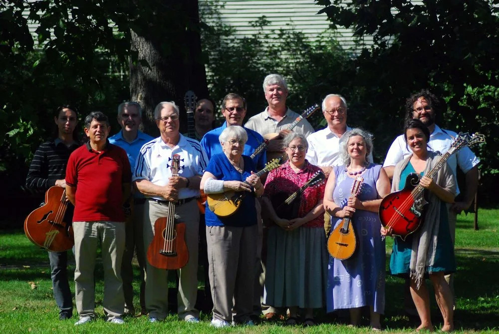
The orchestra on the lawn at Porter-Phelps-Huntington, Hadley
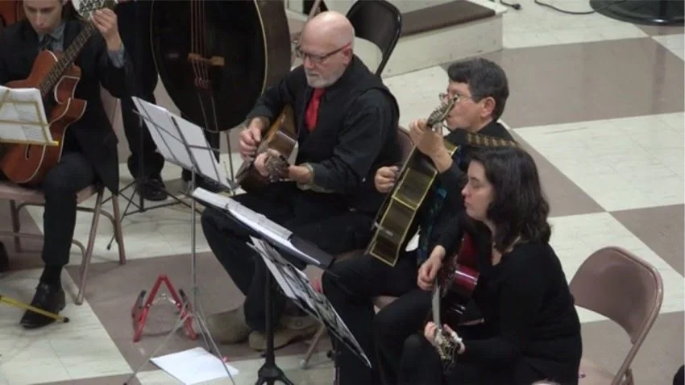
Adam on mandolin beside Will Melton on mandola, with the basses behind and the mandocellos to Adam's left.
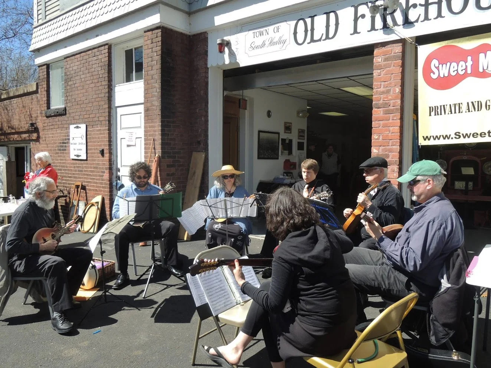
Playing outside the Old Firehouse in South Hadley
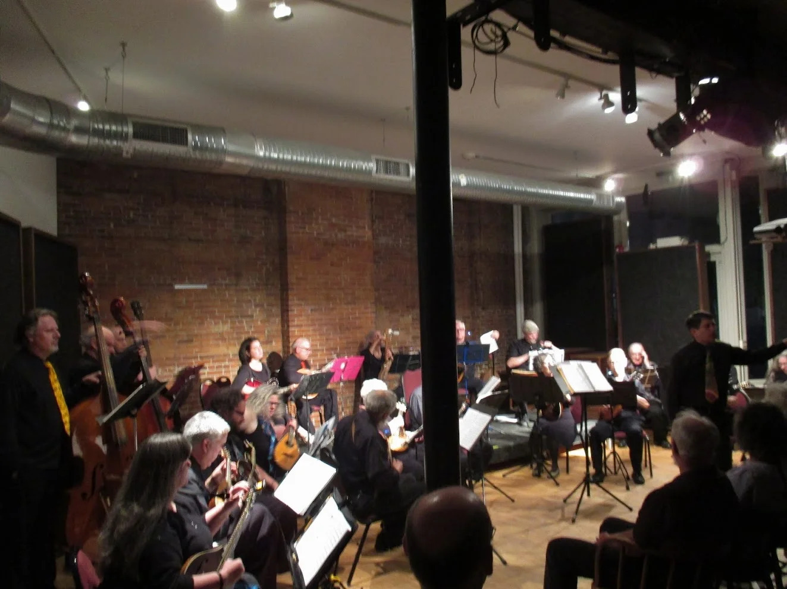
Greenfield concert
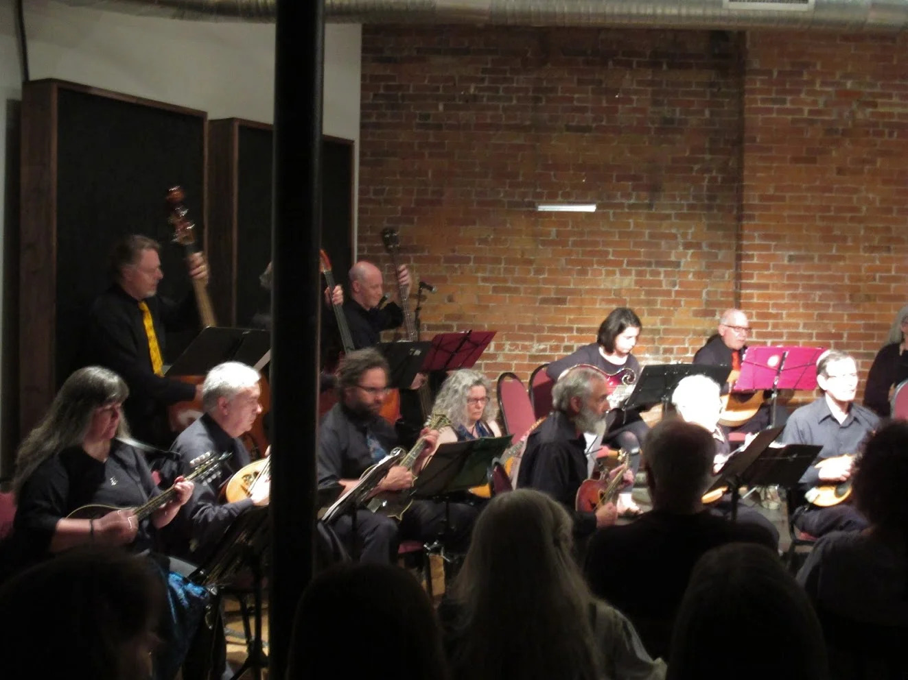
Greenfield concert
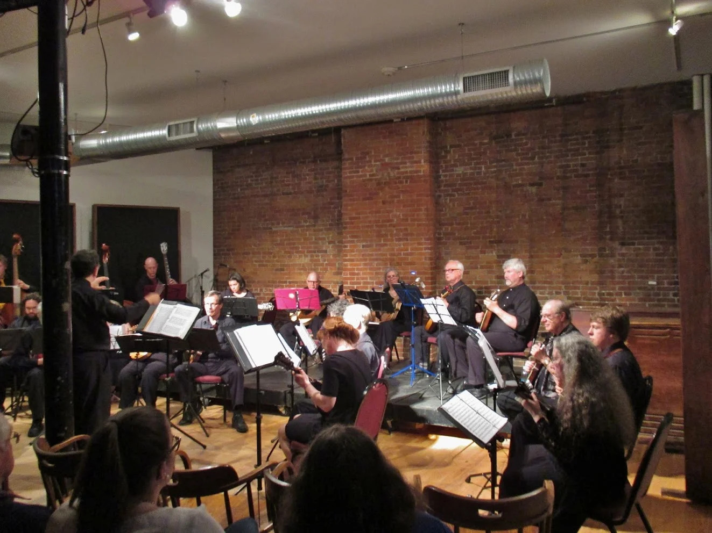
Greenfield concert
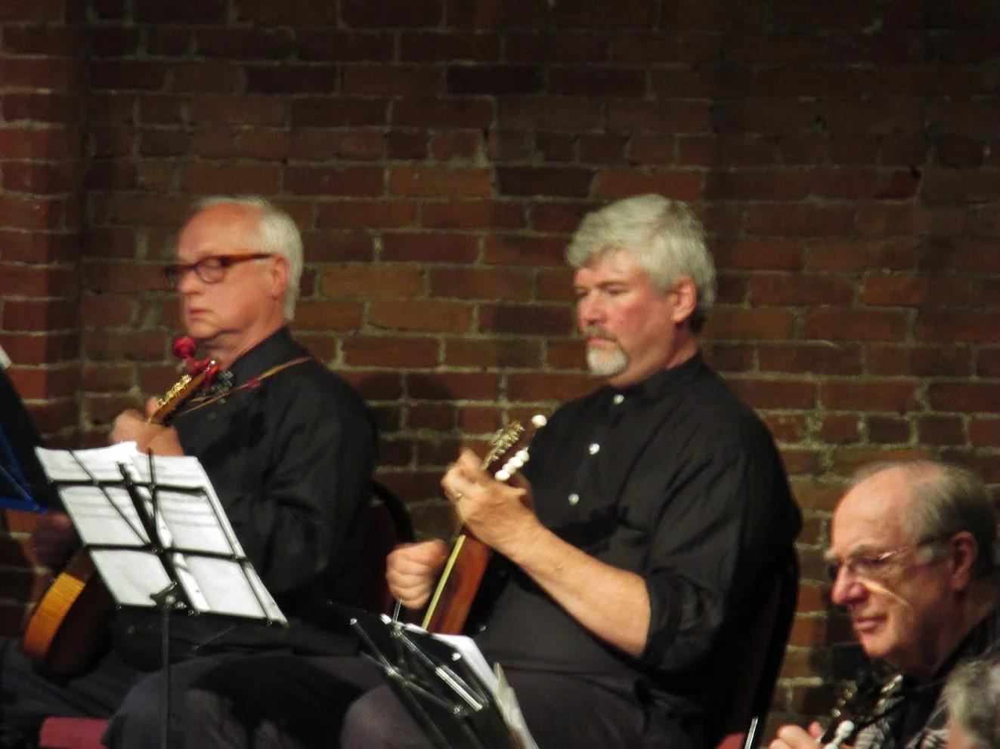
Mandolins up close, Greenfield concert
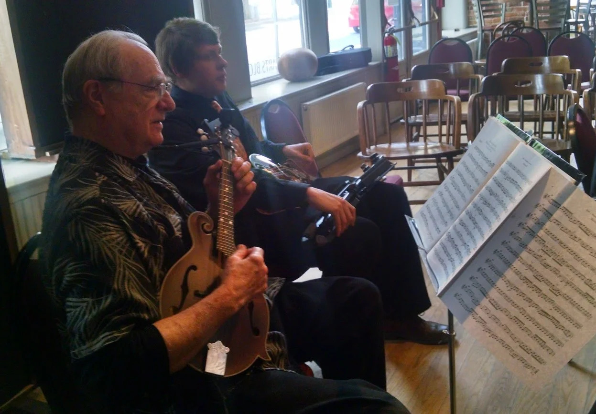
Strings for Albert
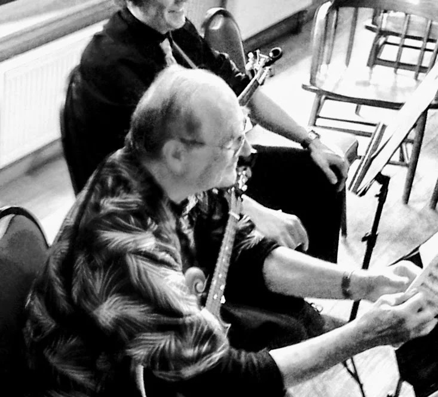
Adam at rehearsal
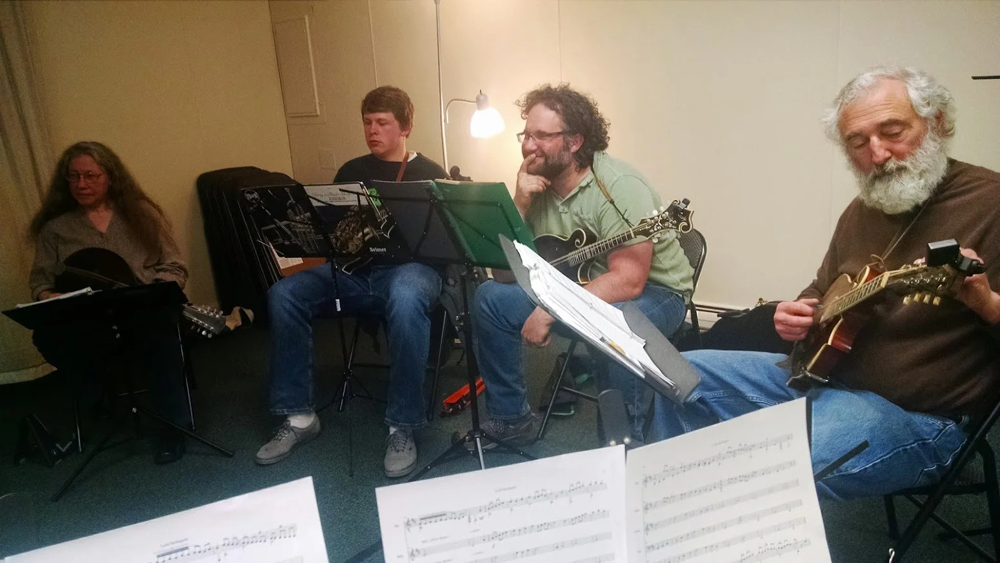
Rehearsal, April 2015
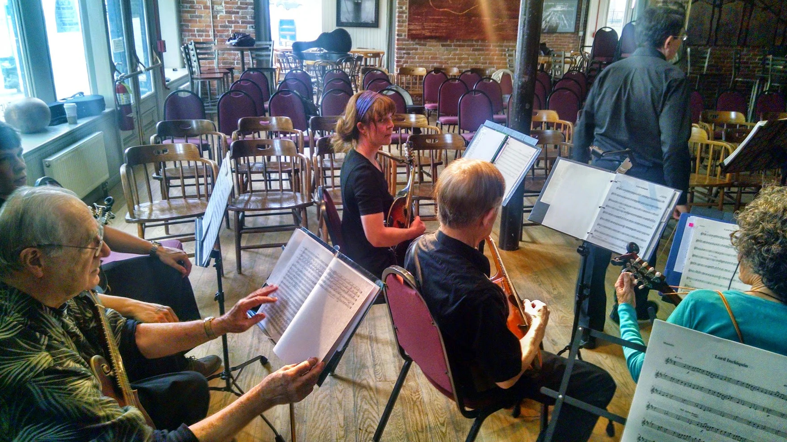
Rehearsal, May 2015
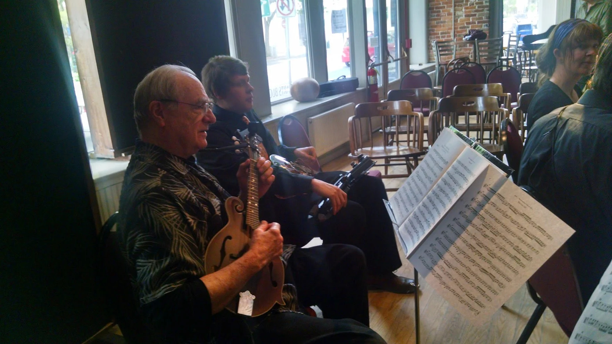
Al Barten and Zach Autio at rehearsalAl Barten
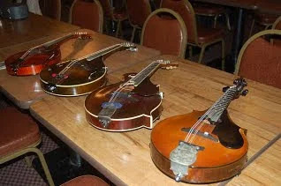
Vintage mandolin-family instruments laid out before a rehearsal